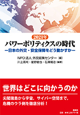
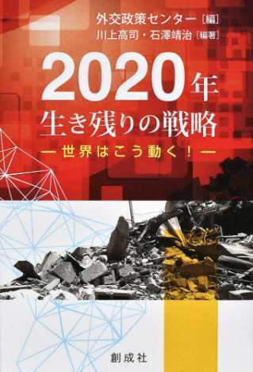

書籍紹介
パワーポリティクスの時代―日本の外交・安全保障をどう動かすか―（2021/5/31）
創成社
編：外交政策センター
編著：川上高司・星野俊也・石澤靖治

日本は本当に「和の国」か （2019/6/18）
PHP研究所
著：吉木誉絵
2020年 生き残りの戦略ー世界はこう動く！ （2020/1/24）
創成社
編：外交政策センター
編著：川上高司・石澤靖治

アメリカ 情報・文化支配の終焉 （2019/12/14）
PHP研究所
著：石澤靖治

オリンピックと日本人の心（単行本）（2018/6/23）
内外出版株式会社
著：鈴木くにこ

男の「定年後」を死ぬまで幸せに生きる方法 （単行本）（2018/6/15）
WAVE出版
著：蟹瀬誠一

アメリカ文化事典（2018/1/25）
アメリカ学会・編 丸善出版
川上高司（編集委員）

核兵器の拡散 終わりなき論争 (2017/5）
勁草書房
（監訳）川上高司 （著）スコット・せーガン
ケネス・ウォルツ（訳）齋藤 剛

トランプ後の世界秩序 激変する軍事・外交・経済 (2017/4）
東洋経済新報社
共編著：石澤靖治・川上高司

「無極化」時代の日米同盟 アメリカの対中宥和政策は日本の『危機の20年』の始まりか(2015/7)
ミネルヴァ書房
著：川上高司

「国連における平和構築」(2011/12)（第5章）104-125頁
有斐閣
著：星野俊也
編著：藤原帰一・大芝亮・山田哲也

テキスト現代ジャーナリズム論(MINERVA TEXT LIBRARY) (2008/1)
ミネルヴァ書房
著：石澤靖治

戦争とマスメディア―湾岸戦争における米ジャーナリズムの「敗北」をめぐって (2005/4)
ミネルヴァ書房
編：石澤靖治


 FACEBOOK
FACEBOOK